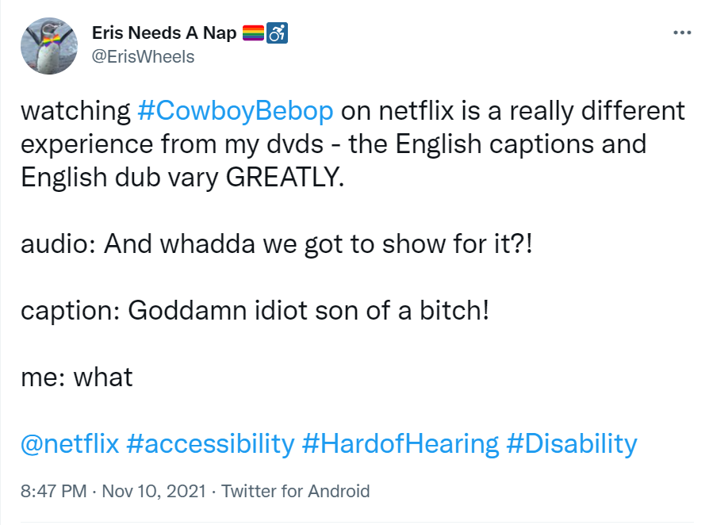

About
Animes are popular among a diversity of people. Here, I focus on the accessibility aspects of Cowboy Bebop.
Disabled Characters
One of the main reasons why I chose this anime as the final project topic is that almost all of the main characters have disabilities, which is really rare not only in animes but also in sci-fi.
Spike lost his natural eye, and his right eye was surgically replaced by a fully-functioning cybernetic eye.
Jet's original limb was lost when he was ambushed by a syndicate assassin and his crooked cop partner. His left arm is a synthetic, robotic limb that seems to heighten his strength.
Faye lost memories of her past life after being frozen in suspended animation until 2068.
Ed is suspected to have autism or ADHD.
Here is a full list of animes featuring main characters with disabilities: Disability anime.
Captions
Comment: "I thought this would be more convenient but it's just giving me a headache trying to follow."